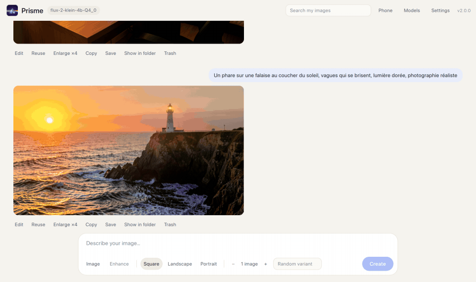
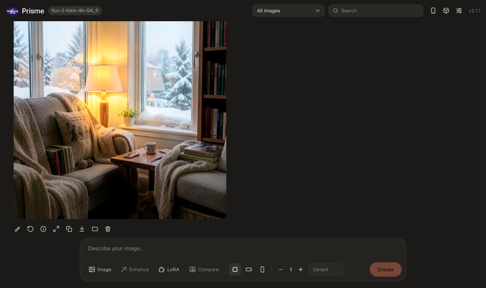
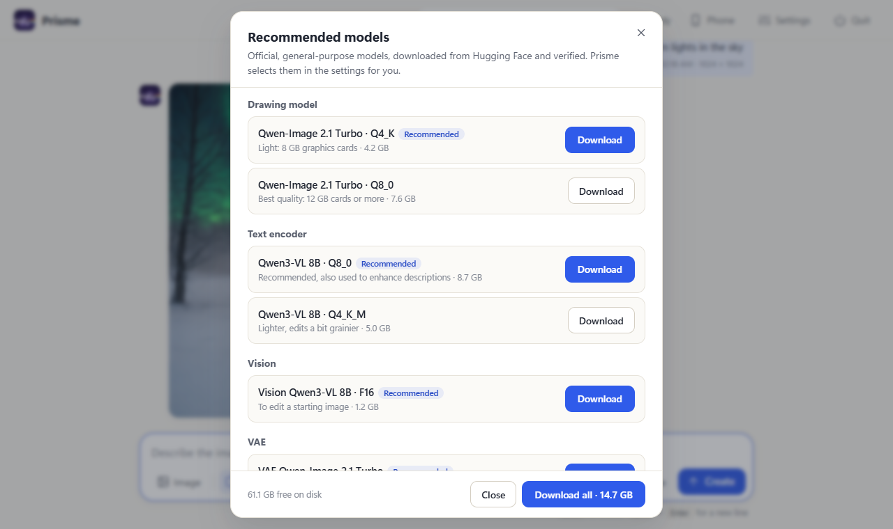
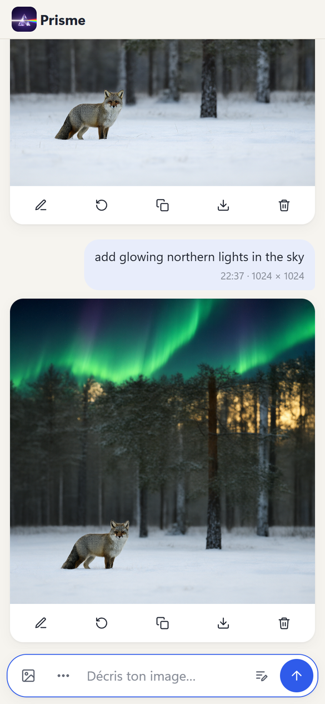
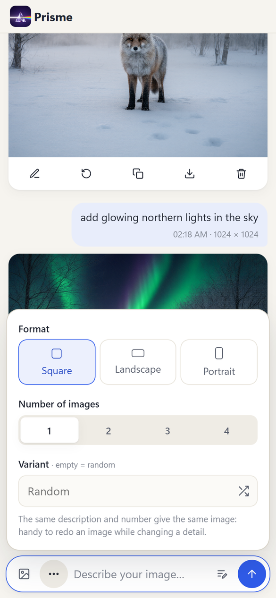

Local AI image generation, as simple as sending a message Créer des images par IA sur ton ordinateur, aussi simplement qu'un message
Prisme creates and edits images on your own graphics card. No cloud, no subscription, no Python, no node editor: download it, let it install everything, and type what you want. Prisme crée et modifie des images avec ta propre carte graphique. Sans cloud, sans abonnement, sans Python ni éditeur de nœuds : télécharge-le, laisse-le tout installer, et écris ce que tu veux.
60 MB · Windows 10 and 11 · NVIDIA, AMD and Intel graphics cards 60 Mo · Windows 10 et 11 · cartes graphiques NVIDIA, AMD et Intel

Three steps, then just writeTrois étapes, puis il suffit d'écrire
An internet connection is needed only once, for the downloads. After that, Prisme works offline. Internet ne sert qu'une fois, pour les téléchargements. Ensuite, Prisme marche hors ligne.
Download PrismeTélécharge Prisme
One small program. Nothing else to install: no Python, no dependencies.Un seul petit programme. Rien d'autre à installer : ni Python, ni dépendances.
Install in two clicksInstalle en deux clics
Prisme picks the right engine for your graphics card and downloads tested, official models, checking every file.Prisme choisit le bon moteur pour ta carte graphique et télécharge des modèles officiels testés, en vérifiant chaque fichier.
Type and press EnterÉcris et appuie sur Entrée
Your requests and images follow each other like a chat. Click Edit on any result to change it.Tes demandes et tes images se suivent comme une conversation. Clique sur Modifier pour changer un résultat.
Everything you need, nothing you don'tL'essentiel, sans le superflu
Prisme aims to be the simplest way to run image models locally, not the most complex one.Prisme veut être la façon la plus simple de faire tourner des modèles d'images en local, pas la plus compliquée.
A real desktop appUne vraie application
New in Prisme 2: its own window on Windows and Mac, light or dark like your system, title bar included. Prisme 1 updates itself in one click.Nouveau dans Prisme 2 : sa propre fenêtre sur Windows et Mac, claire ou sombre comme ton système, barre de titre comprise. Prisme 1 se met à jour en un clic.
Private and offlinePrivé et hors ligne
Prompts, models and images stay on your computer. No account, no tracking, MIT license, every download checked by SHA-256.Descriptions, modèles et images restent sur ton ordinateur. Pas de compte, pas de pistage, licence MIT, chaque téléchargement vérifié par SHA-256.
Edit any imageModifie n'importe quelle image
Drop a photo or reuse a result, then describe the change: "add snow on the roof".Dépose une photo ou reprends un résultat, puis décris le changement : « ajoute de la neige sur le toit ».
Better prompts, locallyDe meilleures descriptions, en local
A local language model turns a short idea into a detailed description, and looks at your image for edits.Un modèle de langage local détaille une idée courte, et regarde ton image pour les modifications.
Use it from your phoneUtilise-le depuis ton téléphone
On the home Wi-Fi, approve your phone once and create from the couch, with the PC's graphics card.Sur le Wi-Fi de la maison, autorise ton téléphone une fois et crée depuis le canapé, avec la carte graphique du PC.
Your graphics cardTa carte graphique
NVIDIA (CUDA), AMD and Intel (Vulkan) on Windows, Vulkan on Linux, Metal on Apple Silicon Macs.NVIDIA (CUDA), AMD et Intel (Vulkan) sous Windows, Vulkan sous Linux, Metal sur les Mac à puce Apple.
Compare modelsCompare les modèles
The same prompt and variant with 2 to 4 models, each image captioned with its model and how long it took.La même description et la même variante avec 2 à 4 modèles, chaque image légendée avec son modèle et son temps.
Redo any imageRefais n'importe quelle image
Each image keeps its models and settings. Open its details, then redo it identically or change one detail.Chaque image garde ses modèles et ses réglages. Ouvre ses détails, puis refais-la à l'identique ou change un détail.
Projects and LoRAProjets et LoRA
Sort your images into projects, and choose LoRA styles and their strength for each creation.Range tes images dans des projets, et choisis des styles LoRA et leur intensité à chaque création.
See it in actionÀ quoi ça ressemble
Light and dark themes, in English and French, on a computer or a phone.Thème clair ou sombre, en français ou en anglais, sur ordinateur ou téléphone.




An easy alternative to ComfyUIUne alternative simple à ComfyUI
Prisme doesn't try to beat node editors at their own game. It removes the setup.Prisme ne cherche pas à battre les éditeurs de nœuds sur leur terrain. Il supprime l'installation.
| Prisme | Node-based tools (ComfyUI…)Outils à nœuds (ComfyUI…) | |
|---|---|---|
| InstallInstallation | One program, engine and models in two clicksUn programme, moteur et modèles en deux clics | Python, dependencies, custom nodesPython, dépendances, nœuds supplémentaires |
| Learning curvePrise en main | Type, press EnterÉcrire, appuyer sur Entrée | Graphs of nodesGraphes de nœuds |
| Phone accessTéléphone | Built inIntégré | Extra setupÀ configurer |
| Advanced workflowsChaînes avancées | Settings, LoRA, samplersRéglages, LoRA, échantillonneurs | Virtually unlimitedPresque illimitées |
Download PrismeTélécharger Prisme
A graphics card with 8 GB of video memory or more is recommended, plus about 16 GB of free disk space for the engine and models.Une carte graphique avec 8 Go de mémoire vidéo ou plus est conseillée, et environ 16 Go libres sur le disque pour le moteur et les modèles.
Windows
Windows 10 or 11 with an NVIDIA, AMD or Intel graphics card. Not code-signed yet: if SmartScreen appears, click More info, then Run anyway.Windows 10 ou 11 avec une carte NVIDIA, AMD ou Intel. Pas encore signé : si SmartScreen apparaît, clique sur Informations complémentaires, puis Exécuter quand même.
Prisme.exemacOS Tested on M3Testé sur M3
Apple Silicon (M1 or later). Open the disk image and drag Prisme onto Applications. The app is not notarized: open System Settings → Privacy & Security and click Open Anyway.Puce Apple (M1 ou plus récente). Ouvre l'image disque et glisse Prisme sur Applications. L'appli n'est pas notariée : ouvre Réglages Système → Confidentialité et sécurité, puis Ouvrir quand même.
Prisme-macOS-arm64.dmgLinux ExperimentalExpérimental
x64 with a Vulkan driver (Ubuntu 24.04 or similar). If libraries are missing, Prisme tells you which ones to install.x64 avec un pilote Vulkan (Ubuntu 24.04 ou équivalent). S'il manque des bibliothèques, Prisme indique lesquelles installer.
Prisme-Linux-x64.tar.gzChecksums, release notes and earlier versions are on the Releases page. Les empreintes, les notes de version et les versions précédentes sont sur la page Releases.
QuestionsQuestions fréquentes
Is Prisme free?Prisme est-il gratuit ?
Yes. Prisme is open source under the MIT license, with no account, no subscription and no credits. The recommended models are free to download too; check each model's license on its page.Oui. Prisme est open source sous licence MIT, sans compte, sans abonnement et sans crédits. Les modèles conseillés sont gratuits aussi ; vérifie la licence de chacun sur sa page.
Does it work offline?Est-ce que ça marche sans Internet ?
Yes, once the engine and the models are downloaded. The only optional connection is a version check on GitHub at launch, which you can turn off.Oui, une fois le moteur et les modèles téléchargés. La seule connexion facultative est la recherche d'une nouvelle version sur GitHub au lancement, qui se désactive.
What hardware do I need?Quel matériel faut-il ?
A graphics card with 8 GB of video memory or more. On an NVIDIA RTX 4070 SUPER (12 GB), a 1024 × 1024 image takes 25 to 50 seconds, model loading included; on an Apple M3 Mac with 18 GB, about 5 minutes. Other cards haven't been measured yet: results are welcome in the project's Discussions.Une carte graphique avec 8 Go de mémoire vidéo ou plus. Sur une NVIDIA RTX 4070 SUPER (12 Go), une image de 1024 × 1024 prend 25 à 50 secondes, chargement des modèles compris ; sur un Mac M3 de 18 Go, environ 5 minutes. Les autres cartes n'ont pas encore été mesurées : tes résultats sont les bienvenus dans les Discussions du projet.
Which models does it use?Quels modèles utilise-t-il ?
Prisme downloads a tested set of official, general-purpose models from Hugging Face (Qwen-Image 2.1 Turbo and Qwen3-VL). It also runs other models supported by stable-diffusion.cpp, in GGUF or safetensors format, plus LoRA.Prisme télécharge un ensemble testé de modèles officiels et généralistes depuis Hugging Face (Qwen-Image 2.1 Turbo et Qwen3-VL). Il fait aussi tourner d'autres modèles pris en charge par stable-diffusion.cpp, en GGUF ou safetensors, ainsi que les LoRA.
Is it an alternative to ComfyUI?Est-ce une alternative à ComfyUI ?
For creating and editing images from a description, yes, with a much simpler interface. For complex multi-step workflows, ComfyUI stays more powerful.Pour créer et modifier des images à partir d'une description, oui, avec une interface bien plus simple. Pour des chaînes de traitement complexes, ComfyUI reste plus puissant.
Is it safe to use from my phone?Est-ce sûr depuis mon téléphone ?
Phone access is off by default. When you turn it on, each device needs a random access code or your approval on the PC. The connection isn't encrypted, so use it on your home Wi-Fi, not on public networks.L'accès depuis le téléphone est désactivé par défaut. Une fois activé, chaque appareil a besoin d'un code d'accès aléatoire ou de ton autorisation sur le PC. La connexion n'est pas chiffrée : utilise-la sur le Wi-Fi de la maison, pas sur un réseau public.
Privacy and legal noticeConfidentialité et mentions légales
- No cookies, no analytics, no advertising. The author of Prisme collects no data about visitors.
- Your language choice (EN or FR) is saved only in your browser, so the page opens in that language next time. You can clear it with your browser data.
- This site is hosted by GitHub, which receives your IP address when you open the page or download a file, like any web host, and the page asks GitHub for the latest version number. See the GitHub Privacy Statement.
- The Prisme app sends nothing about you either: your prompts, images and models stay on your computer. It only contacts GitHub (engines, new version check, which can be turned off) and Hugging Face (models) to download files.
- Publisher: d3Ita, a non-commercial open-source project by an individual. Contact: GitHub Discussions.
- Host: GitHub, Inc., 88 Colin P. Kelly Jr. Street, San Francisco, CA 94107, United States.
- Pas de cookies, pas de mesure d'audience, pas de publicité. L'auteur de Prisme ne collecte aucune donnée sur les visiteurs.
- Ton choix de langue (EN ou FR) est enregistré seulement dans ton navigateur, pour ouvrir la page dans cette langue la prochaine fois. Tu peux l'effacer avec les données de ton navigateur.
- Ce site est hébergé par GitHub, qui reçoit ton adresse IP quand tu ouvres la page ou télécharges un fichier, comme tout hébergeur, et la page demande à GitHub le numéro de la dernière version. Voir la déclaration de confidentialité de GitHub.
- L'appli Prisme n'envoie rien sur toi non plus : tes descriptions, tes images et tes modèles restent sur ton ordinateur. Elle contacte seulement GitHub (moteurs, recherche de nouvelle version, désactivable) et Hugging Face (modèles) pour télécharger des fichiers.
- Éditeur : d3Ita, projet open source non commercial d'un particulier. Contact : Discussions GitHub.
- Hébergeur : GitHub, Inc., 88 Colin P. Kelly Jr. Street, San Francisco, CA 94107, États-Unis.